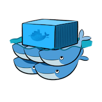
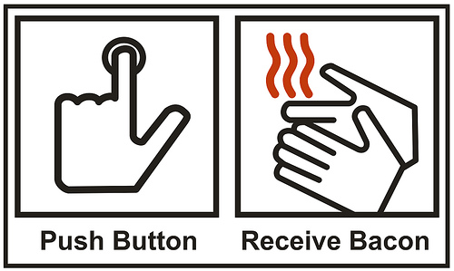
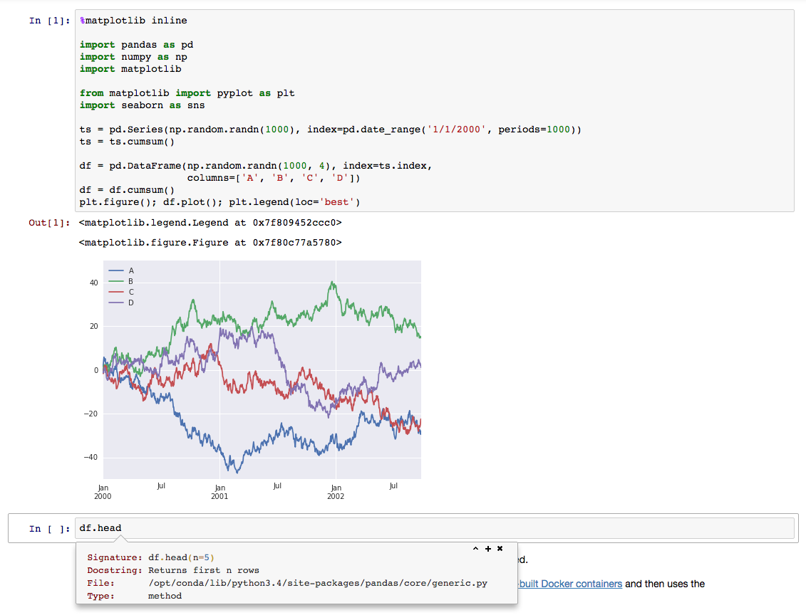

Deploy an interactive data science environment
with JupyterHub on Docker Swarm
rack.to/jupyterhub-on-docker-swarm
Use the arrow keys to navigate
Instructors
| Kyle Kelley | @rgbkrk |
| Carolyn Van Slyck | @carolynvs |
| Everett Toews | @everett_toews |
| Ash Wilson | @smashwilson |
Goals
Learn Docker basics and Docker Swarm fundamentals. To exercise these fundamentals the participants will deploy JupyterHub on Carina, a hosted Docker Swarm environment. Along the way they'll also gain a better understanding of Jupyter, an open source web application that allows you to create and share documents that contain live code, equations, visualizations, and explanatory text.
Agenda
Setup
Log In
Log in to the Carina GUI.
- Log In
- Use your Rackspace public cloud username/password
- Don't create a cluster just yet
- Note your API Key under your username in the top right corner
Installation
- Docker Version Manager
- Utility for managing Docker client versions
- Manage Docker client versions with dvm
- Do the Install dvm section only
dvm install 1.10.1- Carina CLI
- The CLI for the Caria API
- Getting started with the Carina CLI
- Do the Download and install the CLI and Configure with Carina credentials sections only
carina ls
Site Overview
Get a feel for the Carina website.
- Carina
- Documentation
- Note: Edit on GitHub
- Community
- Use your Rackspace public cloud username/password
- Blog
- Subscribe via RSS
Add a Cluster
Setup a cluster where we can run Docker containers
- Add Cluster
- Cluster Name: mycluster
- Enable Autoscale: unchecked
- Get Access
- Download File
- Unzip
- List files
Docker
Comparison
 |
 |
| VMs | Containers |
Benefits
- Better resource utilization
- Application packaging (Docker images)
- Process isolation
- Reproducible environments
- Composable
- Cloud agnostic
Docker Client
The CLI for the Docker API
- Containers
- Images
- Volumes
- Networks
- etc
Containers
- cgroups for limiting resource usage
- namespaces for isolation
- union filesystem for a layered filesystem
Docker Environment
$ alias de="env | grep DOCKER_"
$ cd Downloads/mycluster
$ cat README.md
Using Your Swarm Cluster
========================
This directory contains all of the files the Docker CLI will need to
communicate with your Swarm Cluster...
$ source docker.env
$ de
DOCKER_HOST=tcp://146.20.68.14:2376
DOCKER_TLS_VERIFY=1
DOCKER_CERT_PATH=/Users/everett/Downloads/mycluster
DOCKER_VERSION=1.10.1
$ dvm use
Now using Docker 1.10.1
Containers
$ docker
Usage: docker [OPTIONS] COMMAND [arg...]
docker [ --help | -v | --version ]
A self-sufficient runtime for containers...
$ docker ps
CONTAINER ID IMAGE COMMAND CREATED STATUS PORTS NAMES
2c226fad0713 carina/consul "/bin/consul agent -b" 2 days ago Up 2 days 96afcb76-6483-443e-941d-df9f803a4628-n2/carina-svcd
c715e66154c8 carina/consul "/bin/consul agent -b" 3 days ago Up 3 days 96afcb76-6483-443e-941d-df9f803a4628-n1/carina-svcd
$ docker run --interactive --tty alpine:3.3 /bin/sh
/ #
Containers
# uname -a
Linux d020582f8e97 3.18.21-1-rackos #1 SMP Tue Oct 6 18:37:31 UTC 2015 x86_64 Linux
# ps
PID USER TIME COMMAND
1 root 0:00 /bin/sh
17 root 0:00 ps
# exit
Containers
$ docker ps --latest
CONTAINER ID IMAGE COMMAND CREATED STATUS PORTS NAMES
d020582f8e97 alpine:3.3 "/bin/sh" 5 minutes ago Exited (0) 1 seconds ago 96afcb76-6483-443e-941d-df9f803a4628-n2/pedantic_yalow
$ docker ps --latest --quiet
d020582f8e97
$ docker start $(docker ps -l -q)
d020582f8e97
$ docker ps -l
CONTAINER ID IMAGE COMMAND CREATED STATUS PORTS NAMES
d020582f8e97 alpine:3.3 "/bin/sh" 6 minutes ago Up 10 seconds 96afcb76-6483-443e-941d-df9f803a4628-n2/pedantic_yalow
$ docker attach $(docker ps -l -q)
(Press enter if you just get a blank line)
# exit
$ docker rm $(docker ps -l -q)
d020582f8e97
Containers
$ docker run --detach --name ghost --publish 8080:2368 ghost:0.7
fbe7b7f520e8ba08925f4a2df1cd7d66bbacd25164656e25fca34e24127e7c73
$ docker logs ghost
...
Migrations: Complete
Ghost is running in development...
Listening on 0.0.0.0:2368
Url configured as: http://localhost:2368
Ctrl+C to shut down
$ docker ps -l
CONTAINER ID IMAGE COMMAND CREATED STATUS PORTS NAMES
fbe7b7f520e8 ghost:0.7 "/entrypoint.sh npm s" About a minute ago Up About a minute 172.99.77.191:8080->2368/tcp 96afcb76-6483-443e-941d-df9f803a4628-n2/ghost
$ open http://$(docker port ghost 2368/tcp)
$ docker rm --force ghost
ghost
Lab
- Run an
nginx:1.9container in detached mode - Bind the container port 80 to the host port 80
- View the default nginx landing page
- Bonus Points: Replace the default nginx landing page using
docker cpand a file from your laptop - Stop the container and remove it
Container Resources
Images
- You can kinda sorta think of it like an image for a VM, but really it's a very different beast
- Layered filesystems
- Top layer is rw and the layers below are ro
- There's an analogy to Git but we won't be using
docker commit
Images
$ docker images
REPOSITORY TAG IMAGE ID CREATED SIZE
alpine 3.3 90239124c352 31 hours ago 4.794 MB
cirros latest f8ce316a37a7 6 weeks ago 7.735 MB
nginx 1.9 69203b7cd029 7 days ago 134.6 MB
swarm 1.1.0 4b5b33ba4e4f 2 weeks ago 18.11 MB
ghost 0.7 c39498b8f953 2 weeks ago 352.2 MB
carina/consul latest 2a49945a93ab 2 weeks ago 28.49 MB
$ docker pull alpine:3.3
96afcb76-6483-443e-941d-df9f803a4628-n1: Pulling alpine:3.3... : downloaded
Dockerfile
- Uses a basic DSL with instructions for building Docker images
- Provides a repeatable, transparent, and idempotent mechanism for creating images
- Each instruction adds a new layer to the image and then commits the image
Images
$ mkdir workshop
$ cd workshop
$ touch Dockerfile
$ touch entrypoint.sh
$ chmod u+x entrypoint.sh
Dockerfile
Edit Dockerfile
FROM alpine:3.3
MAINTAINER Firstname Lastname "firstname.lastname@example.com"
ARG BUILD_TIME_VAR="Default Build Time Message"
ENV RUN_TIME_VAR="Default Run Time Message"
RUN apk --no-cache add nginx
COPY entrypoint.sh /entrypoint.sh
WORKDIR /usr/share/nginx/html/
RUN echo $BUILD_TIME_VAR >> index.html
EXPOSE 80
ENTRYPOINT ["/entrypoint.sh"]
CMD ["Default CMD Message"]
Entrypoint Script
Edit entrypoint.sh
#!/bin/sh
set -euo pipefail
echo $RUN_TIME_VAR >> /usr/share/nginx/html/index.html
echo $1 >> /usr/share/nginx/html/index.html
exec nginx -g "daemon off;"
Images
$ docker build --build-arg BUILD_TIME_VAR="Chop Wood," --tag="nginx-message:1.0" .
Sending build context to Docker daemon 3.072 kB
Step 1 : FROM alpine:3.3
---> 90239124c352
...
Successfully built 3f7493082af2
$ docker images
REPOSITORY TAG IMAGE ID CREATED SIZE
nginx-message 1.0 3f7493082af2 About a minute ago 6.249 MB
...
Images
$ docker run --detach \
--name nginx \
--publish 80:80 \
--env RUN_TIME_VAR="Carry Water," \
nginx-message:1.0 \
"Mow Lawn"
3f98a5832b79fe43f97aa07aaa9e425fa33cb7e195e61a6b0d39dfdd4dc0195e
$ open http://$(docker port nginx 80/tcp)
$ docker rm --force nginx
nginx
Image Resources
Volumes
- A specially-designated directory within one or more containers that bypasses the container's Union File System
- Data is written directly to the segment
- Designed to persist data, independent of the container’s life cycle
- Can be shared and reused among containers
Volumes
$ docker create --name data --volume /var/lib/mysql cirros /bin/true
162bf49dbc24245a53095b5be611da3e820862dc8e837a66dab83d7e3f9d5b5a
$ docker ps -l
CONTAINER ID IMAGE COMMAND CREATED STATUS PORTS NAMES
162bf49dbc24 cirros "/bin/true" 12 seconds ago 96afcb76-6483-443e-941d-df9f803a4628-n2/data
$ docker run --detach \
--name mysql \
--volumes-from data \
--env MYSQL_ROOT_PASSWORD=my-root-pw --env MYSQL_DATABASE=test --env MYSQL_USER=test-user --env MYSQL_PASSWORD=test-password \
mysql:5.6
6c38ad9739c47933e0a415912fbec83190bc519650dcb1412091d207f09a040d
$ docker run --rm \
--volumes-from data \
cirros \
ls /var/lib/mysql
auto.cnf
ib_logfile0
ib_logfile1
ibdata1
mysql
performance_schema
test
Volumes
$ docker rm -f mysql
mysql
$ docker run --rm \
--volumes-from data \
cirros \
ls /var/lib/mysql
auto.cnf
ib_logfile0
ib_logfile1
ibdata1
mysql
performance_schema
test
$ docker rm --volumes data
data
Image Resources
- Use data volume containers (Carina)
- Manage data in containers
- Why didn't we use
docker volume?
Networks
- Added to Carina last Monday!
- A secured and isolated environment for the containers in a network
- Automatic name resolution of containers using DNS
- The ability to dynamically connect containers to and disconnect containers from multiple networks
Networks
$ docker network create mynet
0b1194e03c4747be069eef05b6db67c13974d9717ebd859fcff7aa322aa48d9b
$ docker network ls
NETWORK ID NAME DRIVER
0b1194e03c47 mynet overlay
33a440068243 96afcb76-6483-443e-941d-df9f803a4628-n1/none null
3b126dcfc9ea 96afcb76-6483-443e-941d-df9f803a4628-n1/bridge bridge
60cecf066b00 96afcb76-6483-443e-941d-df9f803a4628-n1/host host
c3a94fdde28f 96afcb76-6483-443e-941d-df9f803a4628-n1/docker_gwbridge bridge
$ docker run \
--detach \
--name mysql \
--net mynet \
--env MYSQL_ROOT_PASSWORD=my-root-pw \
mysql:5.6
60d49ac074902a721d6a90af5c4bd85363bed0a998fd4b19da61198f5340b73d
$ docker port mysql 3306
Error: No public port '3306/tcp' published for mysql
Networks
docker run --detach \
--name wordpress \
--net mynet \
--publish 80:80 \
--env WORDPRESS_DB_HOST=mysql \
--env WORDPRESS_DB_PASSWORD=my-root-pw \
wordpress:4.4
c7ebba7f81c1cf48bddbea6d3080713bea58b9de38ee7e7d422b0010b33daf12
$ open http://$(docker port wordpress 80/tcp)
$ docker rm -f mysql wordpress
mysql
wordpress
Networks
$ docker ps
CONTAINER ID IMAGE COMMAND CREATED STATUS PORTS NAMES
2c226fad0713 carina/consul "/bin/consul agent -b" 2 days ago Up 2 days 96afcb76-6483-443e-941d-df9f803a4628-n2/carina-svcd
c715e66154c8 carina/consul "/bin/consul agent -b" 3 days ago Up 3 days 96afcb76-6483-443e-941d-df9f803a4628-n1/carina-svcd
Network Resources
Docker Swarm and Carina
Docker Swarm
- Many Docker Hosts, one API endpoint
- Introduces new concepts, like affinities
- Scheduling according to resource constraints
Carina CLI
See installation and configuration instructions
List your Clusters
$ carina ls
ClusterName Flavor Segments AutoScale Status
mycluster container1-4G 1 false active
$ carina ls
ClusterName Flavor Segments AutoScale Status
mycluster container1-4G 1 false active
Create a Cluster
$ carina create --wait foobar
ClusterName Flavor Segments AutoScale Status
foobar container1-4G 1 false active
Rebuild a Cluster
$ carina rebuild foobar
ClusterName Flavor Segments AutoScale Status
foobar container1-4G 1 false rebuilding-swarm
Load the Docker environment for your Cluster
$ carina env mycluster
source /Users/caro8994/.carina/clusters/carolynvsrax/mycluster/docker.env
# Run the command below to get your Docker environment variables set:
# eval $(carina env mycluster)
PS> carina env mycluster --shell powershell
. C:\Users\caro8994\carina\clusters\carolynvsrax\mycluster\docker.ps1
# Run the command below to get your Docker environment variables set:
# carina env mycluster --shell powershell | iex
$ eval $(carina env mycluster)
PS> carina env mycluster --shell powershell | iex
$ docker ps
CONTAINER ID IMAGE COMMAND CREATED STATUS
ab668e03cafb logjam "tail -f /var/log/foo" 3 seconds ago Up 3 seconds
Grow Your Cluster
$ carina ls
ClusterName Flavor Segments AutoScale Status
mycluster container1-4G 1 false active
$ carina grow --by 1 mycluster
ClusterName Flavor Segments AutoScale Status
mycluster container1-4G 1 false growing
$ carina ls
ClusterName Flavor Segments AutoScale Status
mycluster container1-4G 2 false active
Swarm Scheduling in Action
$ docker run --name whoa1 --detach --publish 80:8080 rackerlabs/whoa
44aff6801d136ae7ba49ad074d94a7ba94740326f8d9099d7830ec8095abdf72
$ docker port whoa1 8080
104.130.0.119:80
$ docker run --name whoa2 --detach --publish 80:8080 rackerlabs/whoa
5e0a9815f9558c7a26a44f3bb214f241a5fbf26e01e008739dff64e39c802fce
$ docker port whoa2 8080
104.130.0.117:80
$ curl $(docker port whoa1)
🎉 Whoa! 🎉
LAB
- Create a new cluster
- Load the Docker environment for the new cluster
- Grow the cluster to 3 segments
- Run 3 instances of `rackerlabs/whoa` on port 80
Where does it run?
Factors that implicitly influence container placement
--publishfinds a node with the published port free--volumes-fromuses the same node as the named container--linkuses the same node aside the named container
Constraints and Affinity
Explicitly influence where your containers run
Set by environment variables or build arguments
# Run on the same node as another container
$ docker run --env affinity:container==backend ...
# Run on a node where image is available
$ docker run --env affinity:image==myapp ...
# Explicit node name
$ docker run --env constraint:node==6dcd3c04-fab5-4367-ac39-d8b17c41c39c-n1 ...
# Build a new image on the same node as an existing container
$ docker build --build-arg affinity:image==myapp -t myapp:v2 .
Carina
Push Button, Receive Swarm
Carina Clusters
- 1 to 3 "segments"; LXC containers on a physical host
- 20 GB disk space, 4 GB memory, 2 vCPUs per segment
- Each segment has its own public IP, discoverable via
docker info
$ docker info
Containers: 9
Images: 13
Role: primary
Strategy: spread
Filters: health, port, dependency, affinity, constraint
Nodes: 3
6dcd3c04-fab5-4367-ac39-d8b17c41c39c-n1: 172.99.73.138:42376
└ Containers: 3
└ Reserved CPUs: 0 / 12
└ Reserved Memory: 0 B / 4.2 GiB
└ Labels: executiondriver=native-0.2, kernelversion=3.18.21-1-rackos, ...
Carina Restrictions
- Volumes only allowed within
/var/lib/docker - No
--privilegedcontainers or--cap-add/--cap-drop - Limited device access
...but other than that, it's just Swarm
Lab
- Run a
rackerlabs/whoacontainer - Create a data volume container (DVC) on the same segment
- Use
docker cpto upload a self-signed TLS certificate to the DVC -
Run an
nginx:1.9container that:- mounts the volume from the DVC
- publishes port 443 and uses your TLS certificate
- proxies traffic to the
rackerlabs/whoacontainer
- Resources:
openssl-fu | NGINX configuration template - Hint:
docker pswill show which segment each container is on
Break
Notebook
Outline
- Interactive Literate Coding
- Collaboration
- Visualization
- Rich objects
- Share-able documents
Living Code
Let's try it live!
tmpnb.org
JupyterHub on Carina
JupyterHub Architecture
- Notebook servers for users
- Configurable HTTP Proxy
- Bring your own auth
Outline
- Create a new cluster
- Clone the repo for this preso
- Rely on jupyterhub-launch
Create a new cluster
carina create jupyterhub --wait
Clone this repo
git clone https://github.com/everett-toews/jupyterhub-on-docker-swarm
Launch
cd jupyterhub-on-docker-swarm # if you're not already there
cd jupyterhub-launch
carina env jupyterhub
# TODO: Environment variables, OAauth, Domain
./launch.sh